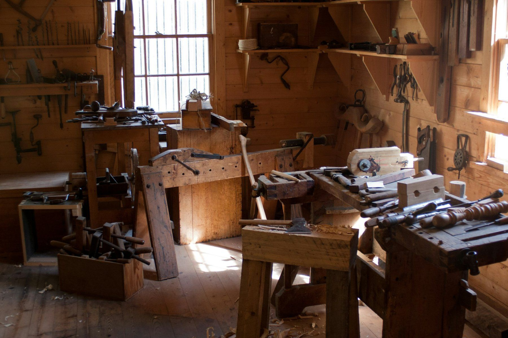
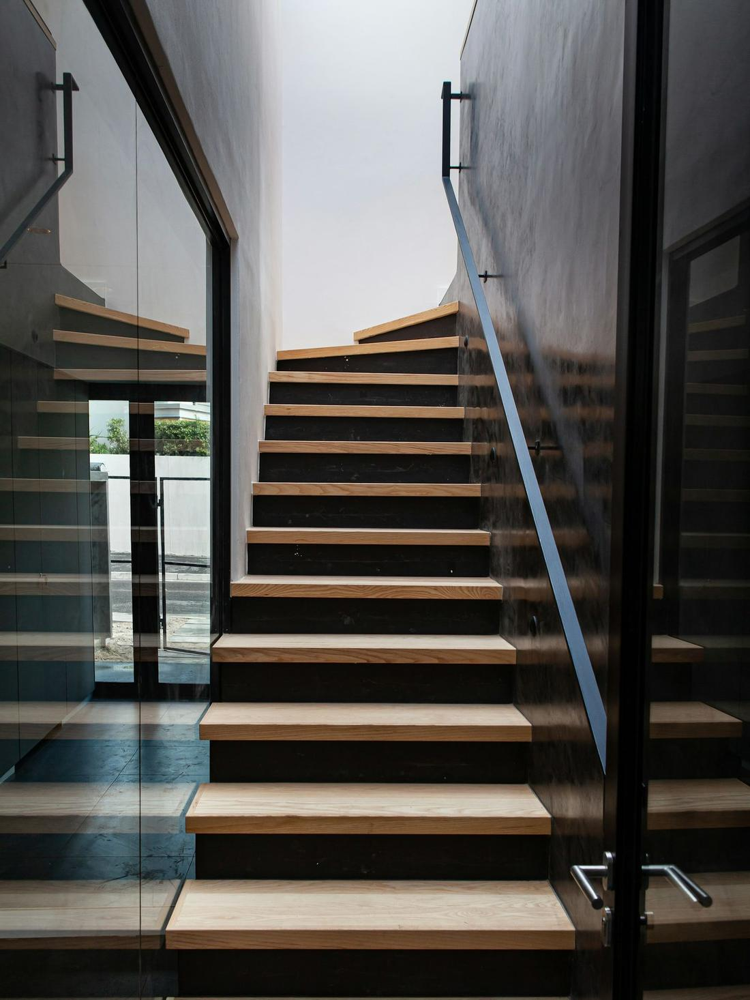
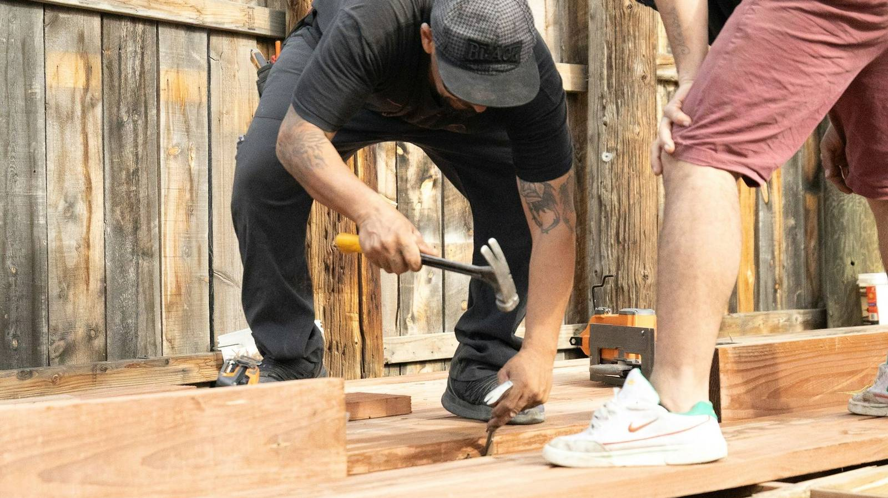
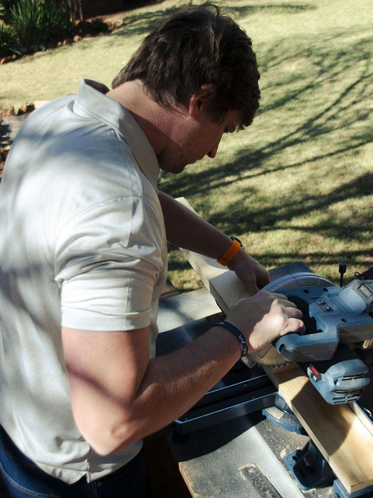

Walk-through
We come round, look at the job, take notes and photos. Free, and no obligation past the conversation.
Finish carpentry, joinery and ongoing building repairs across Logan and the Brisbane south corridor. One trade for the fine work and the everyday fix-ups.

Two trades, one number. The detail work clients notice — skirtings, architraves, joinery, decks — plus the maintenance jobs that keep a place running. Done by the same hands, on the same job.
Skirtings, architraves, cornices, doors, hung and re-hung. Built-in storage, shelving, mantels — cut on site, scribed to walls that aren't square.
Hardwood decking, screening, pergolas and outdoor timber structures. Built to handle a Queensland summer and the wet that follows it.
New treads, balustrade replacements, handrails refastened or rebuilt. The kind of joinery where a 2 mm gap shows.
Rotten timber cut out and replaced, sticking doors planed and re-hung, locks and hardware sorted, gates and fences put back to working order.
Scheduled visits for landlords, body corporates and busy households. One number, one record, one trade on the books.
We come round, look at the job, take notes and photos. Free, and no obligation past the conversation.
An itemised quote — fixed price where the job allows, hourly where it honestly doesn't. No fluff, no surprises later.
Job site is left clean every day. Materials covered, off-cuts taken away, dust kept where it belongs.
We walk through with you at the end. Anything that's not right gets fixed before the invoice goes out.



Tell us about the job. We'll come round, have a look, and put a price on it.
Servicing Logan City · Beenleigh · Springwood · Loganholme · Browns Plains · surrounding south Brisbane suburbs.